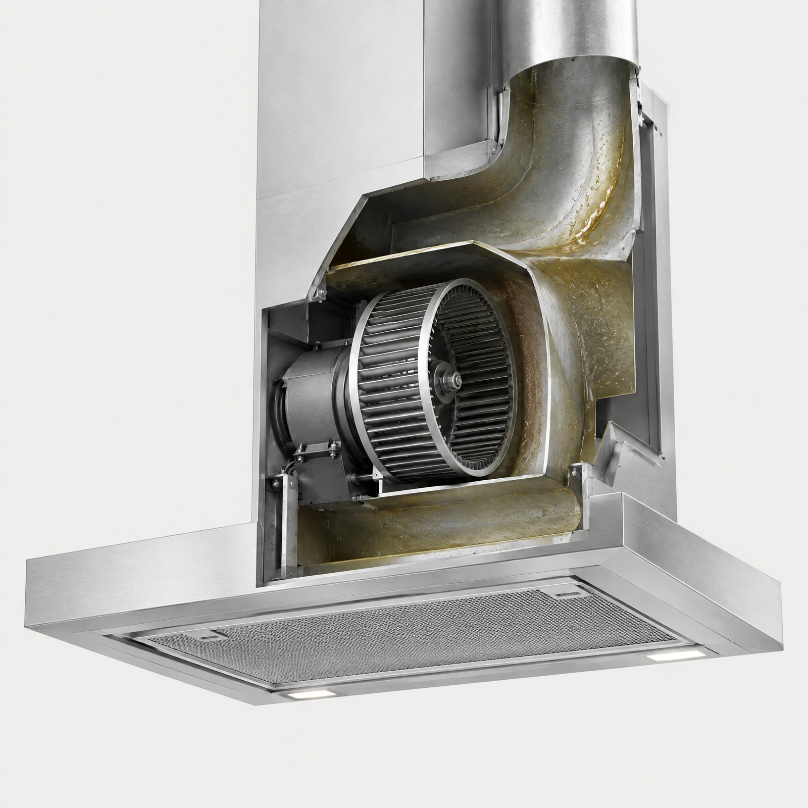
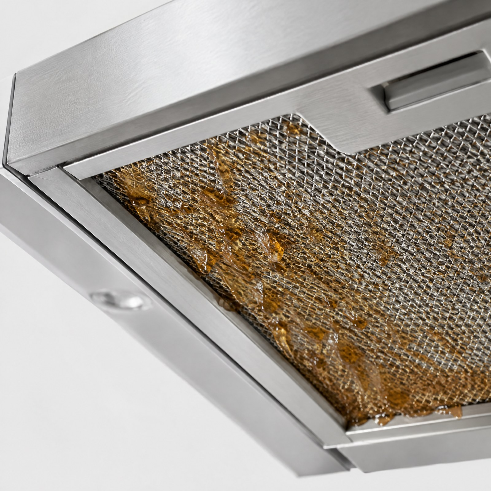

WHERE GREASE BUILDS UP
기름은
어디에
쌓일까

01
02
03
04
01
기름 필터
가장 먼저 기름이 걸리는 곳
02
시로코팬
날개 사이에 기름이 굳어 흡입력이 떨어지는 곳
03
모터 하우징
기름이 튀어 소음과 냄새가 생기는 곳
04
배기 통로
겉에서 보이지 않는 안쪽 벽

필터만 빼서 닦으면,
02 · 03 · 04
는 그대로 남습니다.